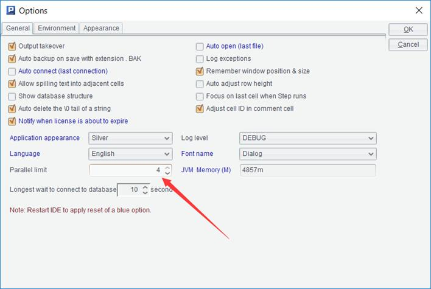

We discussed a method for segmentation of external storage data set in Chapter 2. Such method can not only be used for binary search, but more importantly, for the parallel computing in segment. By letting multiple CPUs share the amount of computation, it is often possible to implement a performance improvement close to linear growth.
SPL provides a convenient parallel computing syntax:
|
|
A |
B |
|
1 |
=file("orders.txt") |
|
|
2 |
fork to(4) |
=A1.cursor@t(area,amount;A2:4) |
|
3 |
|
return B2.groups(area;sum(amount):amount) |
|
4 |
=A2.conj().groups(area;sum(amount)) |
|
The fork statement will start multiple threads to execute their own code blocks in parallel. The number of threads is determined by the length of the parameter sequence after fork. At the same time, fork will assign these parameters to each thread in turn. Accordingly, the value in code block, which is quoted from the cell where fork is located, can be obtained. When the execution of all threads ends, the calculation result of each thread (the value of return in the code block) will be collected into the cell where fork is located, and assembled into a sequence in the order of threads. Then the code continues to execute.
In this example, A2 will generate four threads, each thread will get 1,2,3 and 4 as parameter respectively, and a corresponding segment cursor will be generated in B2 to perform the grouping and aggregating calculations. After all the four threads are executed, the return value of each thread (actually, a table sequence) will be collected in the cell of fork (A2), then these table sequences will be concatenated to perform an aggregation again, after that, the grouping and aggregating result for original data table is obtained.
Besides the data table segmentation, it can also be used for the parallel computing of multiple files. For example, orders are placed in 12 files (one file each month), let’s calculate the number of orders with an amount of more than 50 in each region:
|
|
A |
B |
|
1 |
fork to(12) |
=file("orders"\A2\".txt") |
|
2 |
|
=B1.cursor@t(area,amount;A2:4) |
|
3 |
|
=B2.select(amount>=50) |
|
4 |
|
return B2.groups(area;count(1):quantity) |
|
5 |
=A1.conj().groups(area;sum(quantity)) |
|
It will start 12 thread calculations. Note that sum() should used outside the thread instead of count() when count() is used inside the thread.
SPL simplifies the mechanism of parallel computing, assuming that all threads are started at the same time, and the whole task is completed only when all threads are executed. Although it can not be used to deal with system-level complex parallel tasks, the syntax and code are much simpler, which is enough for most structured data computing.
When executing in parallel, we should first set the number of parallels in esProc options:

After setting, SPL will physically generate the threads with a number up to the set value. If the parameter sequence after fork is longer, serial execution will be forced. For example, in the previous example, the sequence length of fork parameter is 12, while the number of parallels set here is 4, in this case, SPL will actually only start 4 threads, and put the first four tasks of fork into the threads to execute in turn. When a thread becomes idle after execution, fill in a task that has not been executed, and repeat according to this rule until all tasks are executed. In this way, there seems to be 12 threads logically, but only 4 threads in fact.
Under this mechanism, splitting the task will be beneficial. Since the actual execution time of each task is not always same, if each thread physically executes only one task, the fast-executing thread, after execution, has to wait for other slow-executing threads. If the task is split, the fast thread can execute more tasks, the total waiting time will be less, the load will be more balanced, and the overall performance will be better. However, the disadvantage of task splitting is that it will occupy more memory to store the results returned by threads, and there are also some costs generated from thread switching and scheduling, therefore it is not the case “more task splitting, the better performance”, and it depends on the actual situation to determine an appropriate value.
Typically, each thread is executed by a corresponding CPU. If the number of threads generated exceeds the number of CPUs, the operating system will use time-sharing technology to switch different threads on the CPUs. These mechanisms will consume CPU and memory resources, resulting in a decline in the overall performance, hence the maximum number of parallels should be set to a value that does not exceed the number of CPUs, usually slightly less, as some CPUs also need to perform other tasks such as operating system processes.
Some servers have a lot of CPUs, perhaps as many as dozens, but sometimes we find that setting more parallel numbers cannot achieve better performance. One reason is that the scheduling cost rises with the number of threads, and the more likely reason is that the hard disk does not have a same parallel computing capability. Since multiple threads will share same set of hard disks, and the data also need to be read from hard disk while performing external storage calculations, and the total throughput capacity of hard disk is definite, there is no way to allow hard disk to run faster once its capacity limit is reached, resulting in the occurrence of a phenomenon that CPU is idle waiting for the hard disk. Especially for mechanical hard disks, parallel reading will also cause more severe head runout, leading in a significant decrease in performance of hard disk, and it is very likely to result in "the more parallel reading, the worse performance".
Server's CPU and hard disk configuration should be balanced to adapt to the computing tasks. Some servers have many high-class CPUs, but such servers are equipped with low-speed mechanical hard disks for large capacity purpose, as a result, they often fail to give full play to the efficiency of the CPU and cause waste. If the money spent on CPUs is used to buy memory or high-speed SSDs, it is likely to spend less and get better performance.